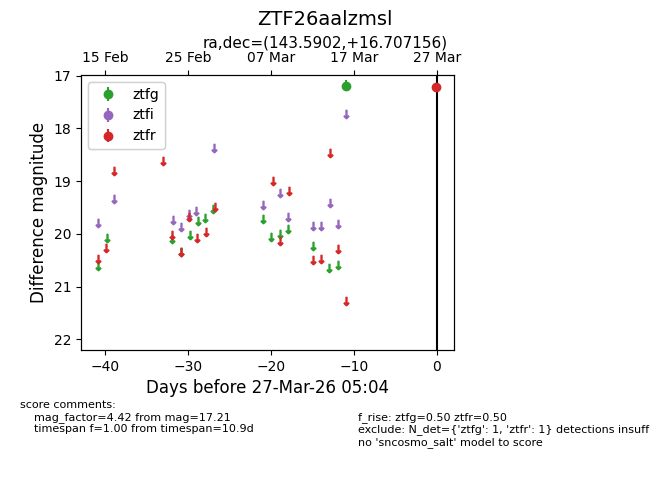
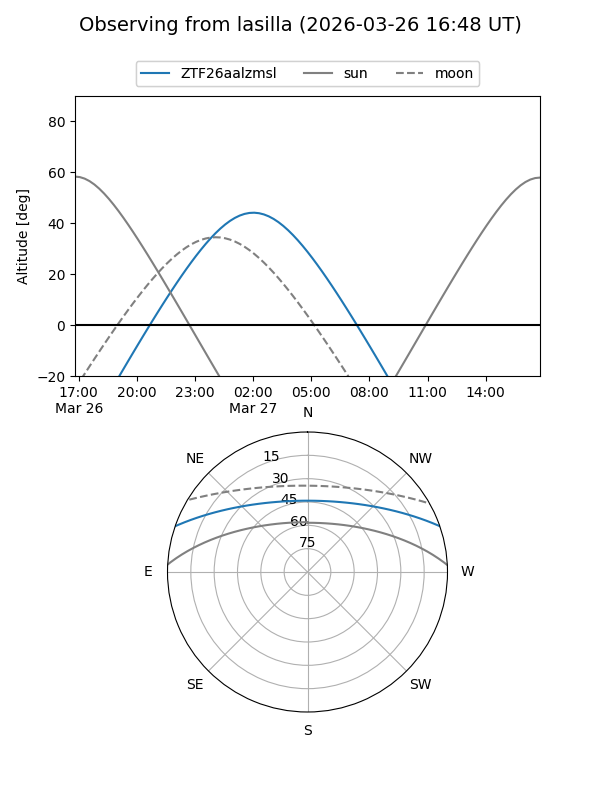
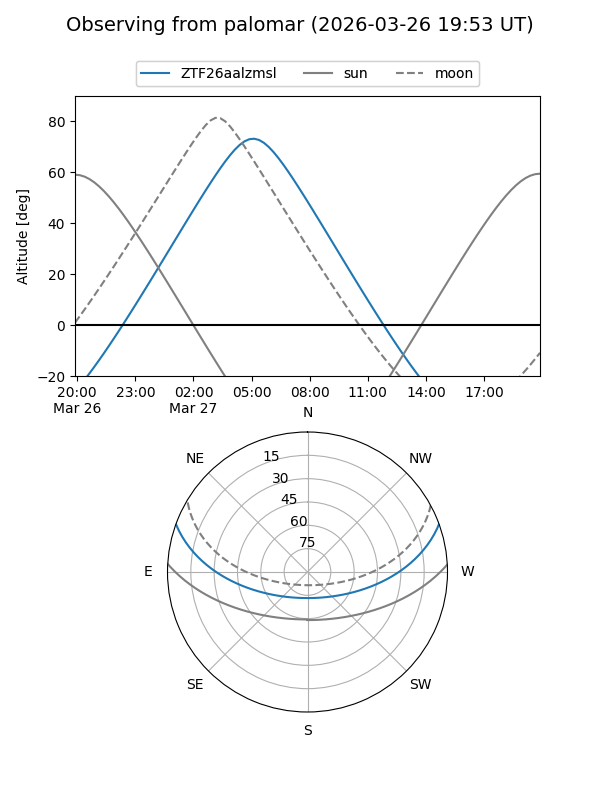

ZTF26aalzmsl
Target ZTF26aalzmsl at 2026-03-27 05:07
Aliases and brokers:
FINK: link
Lasair: link
ALeRCE: link
alt names
ZTF26aalzmsl (ztf,fink_ztf)
Coordinates:
equatorial (ra, dec) = 143.5902,+16.70716
equatorial (HMS+DMS) = 09:34:21.66,+16:42:25.76
galactic (l, b) = (215.2293,+43.41628)
Flags:
Photometry:
last ztfg=17.19, ztfr=17.21
1 ztfg, 1 ztfr detections
Lightcurve

Visibility


Additional plots